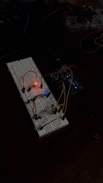
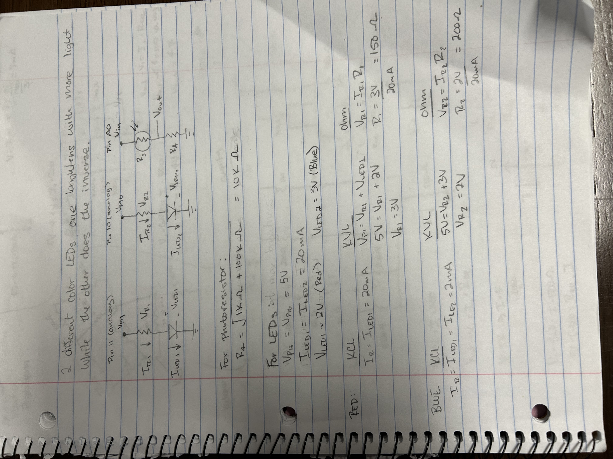
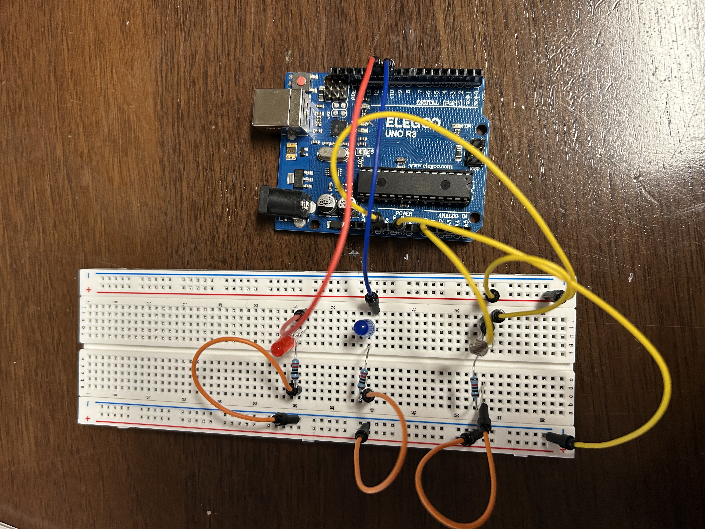
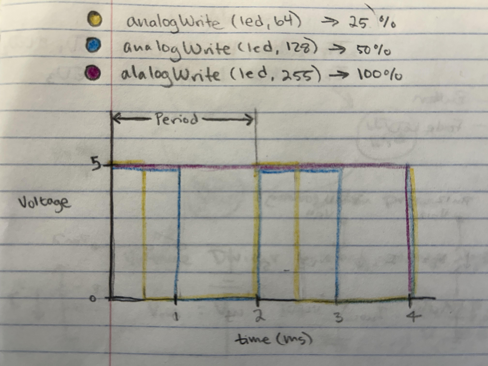

Here is all the documentation for assignment 3!

Pictured above is the schematic of the the A3 circuts. I used the schematic to plan out how to build the circut and determine what resiter I needed to use for each LED and the photoresistor. The pin voltages are each 5V. The red LED uses 2V with a current of 20mA. The blue LED uses 3V with a current of 20mA. Using Kirchoff's and Ohm's laws, I determined the resister needed to be 150 ohms for the red LED and 200 ohms for the blue LED. For the photoresistor, I used geometric mean to calculate the resistor needed, which was 10k ohms.

Pictured above is the circuts I built based off of the schematic I drew. I used a resister of 220 ohms for the LEDS, since that was the closest resistor over the calculations of 150 ohms and 200 ohms. The photoresistor circut uses a resistor of 10k ohms.
/*
A3 Input Output
Senses light changes in a room through a photoresistor. The changes are displayed
through red and blue LEDs. As more light is sensed, the red light gets brighter
and the blue light gets dimmer. When less light is sensed, the reverse occurs.
*/
// sets led1 to pin 11
const int led1 = 11;
// sets led2 to pin 10
const int led2 = 10;
// pin that the sensor is attached to
const int sensorPin = A0;
// the sensor value
int sensorValue = 0;
// minimum sensor value
int sensorMin = 1023;
// maximum sensor value
int sensorMax = 0;
// the setup routine runs once when you press reset:
void setup() {
// initialize digital pin led1 as an output.
pinMode(led1, OUTPUT);
// initialize digital pin ledn2 as an output.
pinMode(led2, OUTPUT);
// turn on LED to signal the start of the calibration period:
digitalWrite(led1, HIGH);
// calibrate during the first five seconds
while (millis() < 5000) {
//sets the sensorValue
sensorValue = analogRead(sensorPin);
// record the maximum sensor value
if (sensorValue > sensorMax) {
// sets the sensorMax if there is a new max
sensorMax = sensorValue;
}
// record the minimum sensor value
if (sensorValue < sensorMin) {
// sets the sensorMin is there is a new min
sensorMin = sensorValue;
}
}
// signal the end of the calibration period
digitalWrite(led1, LOW);
}
// the loop routine runs over and over again forever:
void loop() {
// read the sensor:
sensorValue = analogRead(sensorPin);
// in case the sensor value is outside the range seen during calibration
sensorValue = constrain(sensorValue, sensorMin, sensorMax);
// delay(1); // delay in between reads for stability
// apply the calibration to the sensor reading
sensorValue = map(sensorValue, sensorMin, sensorMax, 0, 255);
// set the brightness of led1:
analogWrite(led1, sensorValue);
// set the brightness of led2:
analogWrite(led2, 255 - sensorValue);
}
Pictured above is the working circut I built running the code I wrote.
Volatage vs. Time graph of the voltage across an LED with analogWrite(led, 64), analogWrite(led, 128), and analogWrite(led, 255).

If all your LEDs were on simultaneously, what would the total current draw be? Is this above or below the total Arduino current draw limits? If all your LEDs were on, how long would your circuit run if powered by a 1200 mAh battery?
The sum of the current draw from the LEDs is 60mA. The button draws 1.5mA. This means the circuts draw 61.5mA total. Since the battery is 1200mAh, 1200mA/61.5mA = 19.5 hours that the circut could run for.
Measure and record the actual voltage across one of your LEDs when it's on. How does this compare to the theoretical forward voltage for your LED color?
The actual volatge across one of the LEDs is 2.06V, which is very close to the expected 2V a red LED would have.